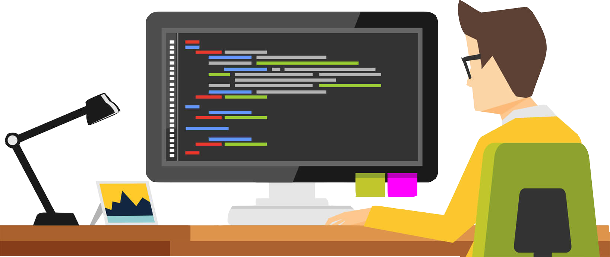

Que es un lenguaje de programación?
Es un lenguaje formal que, mediante una serie de instrucciones, le permite a un programador escribir un conjunto de órdenes, acciones consecutivas, datos y algoritmos para, de esa forma, crear programas que controlen el comportamiento físico y lógico de una máquina.
Clasificación de los lenguajes de alto nivel
Este tipo de lenguajes de programación son independientes de la máquina, son muy similares al
lenguaje humano, pero precisan de un programa intérprete o compilador que traduzca este lenguaje
de programación de alto nivel (programa fuente) a uno de bajo nivel (programa objeto) de tal
forma que es más fácil de interpretar y ejecutar por la computadora.
En esta categoría se encuentran los programas Cobol, Pascal, C, C++, Java,
Ruby entre muchos otros, aunque a los tres últimos otros autores lo clasifican dentro de la
programación orientada a objetos.
Ejemplos de lenguajes de programacion de alto nivel
Interpretados
- JavaScript
- C#
- Java
Compilados
- Fortran
- Rust
- Pascal
Orientado a objetos
- C++
- Ruby
- PHP
Funcionales
- LISP
- ML
- F#